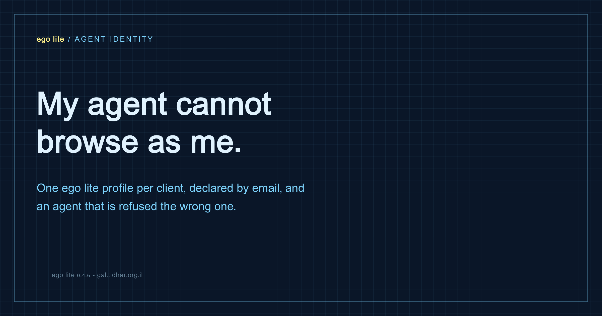

Client scope · Agents · Browser automation
My agent cannot browse as me
The first thing I ask a new client for is an email address on their domain. Everything I build then lives inside their scope: their GitHub, their Supabase project, their Base44 app. When the engagement ends they take over one account and inherit all of it. The terminal side of that was solved. The browser was still leaking - and the leak was silent.

Why an internal email is not a formality
A freelance engagement leaves a trail of accounts behind it. The repo, the issues, the Supabase project, the deploy hooks, the third-party integrations, the API keys someone will need to rotate in eighteen months. If any of it is registered to my personal Gmail, the client does not own their own system - they own a system with me embedded in it.
So the rule is simple: one internal account per client, and everything happens through it. On my current engagement that is a GitHub identity the client provisioned. At handover they take that account and inherit the repo, the tickets and the automations without a migration project.
In the terminal this is enforceable. The project sets GH_CONFIG_DIR to a directory inside the repo, so gh run from that folder reads a project-local auth store. My personal login is not merely discouraged there, it is unreachable. A hook checks the active account before every call and explains the fix when it is wrong.
The important layer is not the hook. It is that the wrong identity cannot be reached from this directory at all. The hook is a good error message.
The hole: the browser has an identity too
Half of modern client work does not happen in the terminal. Base44, Lovable, Supabase dashboards, GitHub UI, the client's own admin panel - the agent has to drive a real browser, signed in as someone. Part one covered how that works: ego lite gives the agent its own task space that inherits my login state, so it can operate authenticated sites without stealing my window.
What I had not thought about: which login state it inherits. A task space is pinned to a browser profile when it is created, and it is created on whichever profile happens to be active in the browser at that moment. Not the project's profile. Not a default. Whichever tab I had open an hour ago.
The failure has two shapes and both are bad. If the wrong profile is not signed in, the site bounces to a login screen and the agent reports that I am logged out - annoying, but visible. If the wrong profile is signed in, everything works perfectly and the agent acts as the wrong person. That one is invisible.
The part that cost me an hour: an option that was accepted and ignored
The documented helper for getting a task space looks like this:
const task = await useOrCreateTaskSpace('my task', { profileId: 'Profile 4' })It runs. It does not throw. It returns a task space. And the space is on whatever profile was active. I asked for the client's profile three times in a row and landed on my personal one three times in a row, while the code read as if I had chosen.
The package is open source, so I read it. useOrCreateTaskSpace(nameOrId) takes one parameter. There is no options object. The second argument I was passing had never existed - it was accepted by JavaScript, dropped on the floor, and the shape of the call made it look deliberate.
Then the good news. One layer down, the capability was there the whole time:
const t = await ego.createTaskSpace('my task', 'Profile 4') // 2nd arg pins the profile
await ego.useTaskSpace(t.id) // create does not select itThat genuinely pins it. With the browser sitting on a completely different profile, the space is born on Profile 4 and pages load as that account. It is not in the shipped skill documentation, and the open feature request for agent-facing profile selection suggests it is not considered finished yet. It works today.
The design: email is the handle, not "Profile 4"
My first attempt hardcoded profile directories, and it was wrong within an hour. Directory ids are not a human handle: I have two profiles with the identical display name, the list changes shape between calls, and I add and remove profiles as clients come and go. I also guessed one mapping from the name and got it wrong - my personal account was not on the profile whose display name matched it - it was on the next one along.
So the handle is the thing a human actually knows: the email address. Three pieces:
1. The project declares one email
$ cat .claude/ego-profile
me@clientdomain.comOne line, in the repo, next to the other project rules. It says which identity this codebase is allowed to browse as, in a form that means something to the client too.
2. The email-to-profile map builds itself
Nothing is hand-written, because a hand-written mapping is exactly the failure being prevented. A resolver script opens a task space pinned to each profile in turn, loads the Google account page, reads who is signed in, and writes the result:
$ bash ~/.claude/hooks/ego-resolve-profile.sh
me@clientdomain.com Profile 4
me@otherclient.com Profile 9
you@personal.example Profile 8
Default personal -- not signed in to GoogleAdd a client, add a profile, sign in, and the map corrects itself the next time an unknown email comes up. Note that this only became possible because the low-level API can pin a profile - without it, mapping every profile would mean asking a human to click through the browser seven times.
3. A hook that refuses the unscoped run
A PreToolUse hook sits in front of every browser command and denies it unless three things hold: the project declares an email, the script names that email out loud, and creation goes through the pinning API with that email's profile. It also lets read-only introspection through, because listing profiles touches nobody's data.
ego profile guard: `useOrCreateTaskSpace('<name>')` creates the space on whichever
profile is active - its options are ignored, there is no profileId. Create with
`const t = await ego.createTaskSpace('<name>', 'Profile 4')` then
`await ego.useTaskSpace(t.id)`. Profile 4 = me@clientdomain.com.The point of putting the email in the script text is not ceremony. It makes the intended scope a thing the agent has to state, which means a wrong intention is visible in the diff rather than in the audit log six weeks later.
This is not a freelancer problem
I built it for client scope, and then noticed the shape is general. Anyone running agents in their daily browser has the same collision: the browser that buys cinema tickets and orders groceries is also the browser that QAs the app they are paid to build. Those are two different identities that happen to share a laptop.
If your agent explores your company's staging environment from the profile that is signed into your personal accounts, the boundary you rely on at work is being decided by which tab was focused. The employer version of this rule is the same as the freelance one: work tasks declare the work identity, and the run is refused otherwise.
What I would not claim
- The hook matches command text. It is a seatbelt, not a sandbox - a determined script can phrase its way around it. The real check is reading the space's profile back after creating it, which the workflow now requires.
- The identity probe relies on a Google account page. Profiles that are not signed in to Google simply report nothing, which is honest but incomplete.
- Pinning through
ego.createTaskSpaceis undocumented. It works in the version I am on and could change - the read-back check is what makes that survivable.
The rule I ended up with
Identity is not a setting, it is a precondition. If you have given an agent the ability to act as you, there has to be a point in the system where it is unable to act as someone else. In the terminal that point is a config directory the wrong account cannot reach. In the browser it is a declared email, a self-correcting map, and a command that never runs when the scope is not stated.
The pieces
Part one covers the browser primitive itself - task spaces, inherited logins, and the control model where the user always wins the wheel.